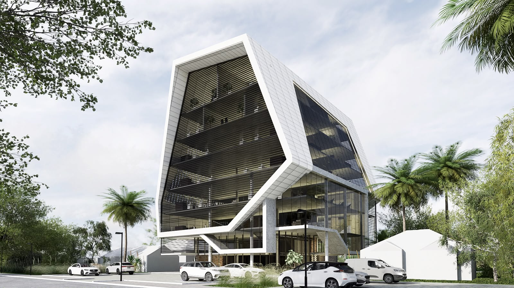
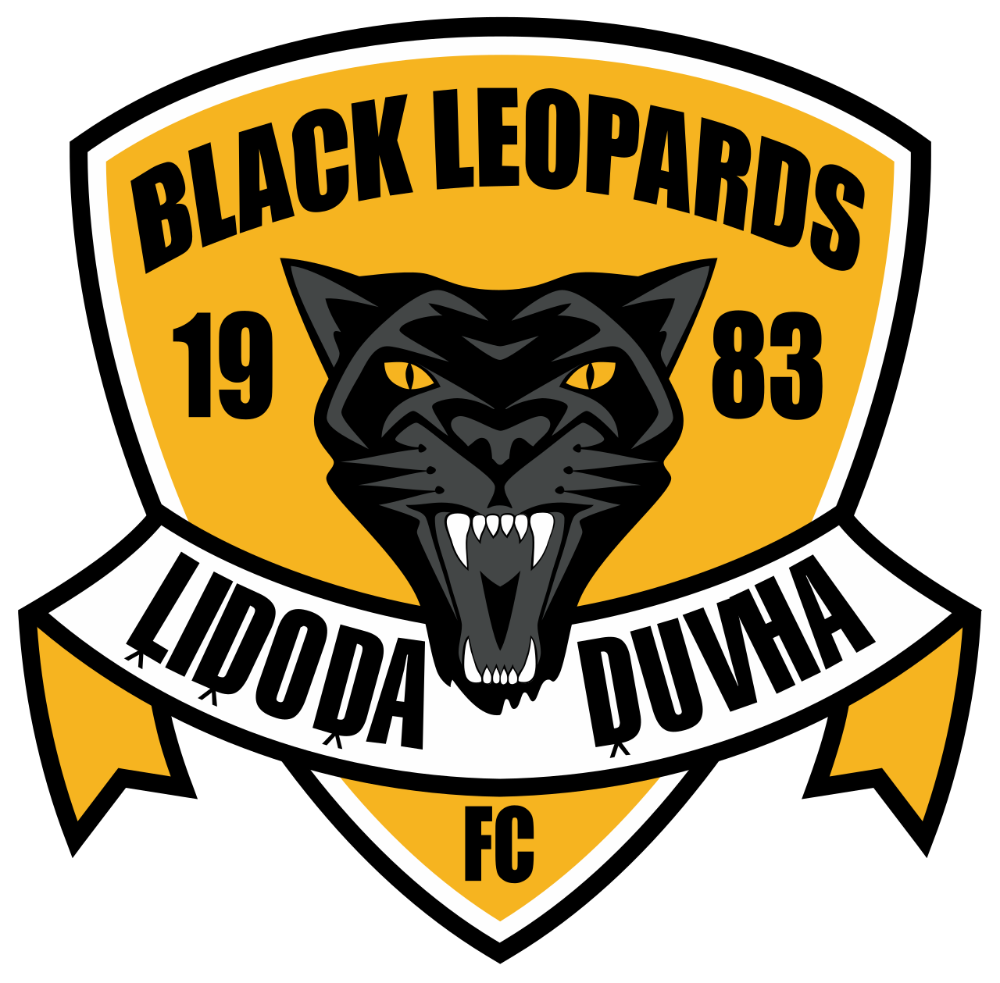
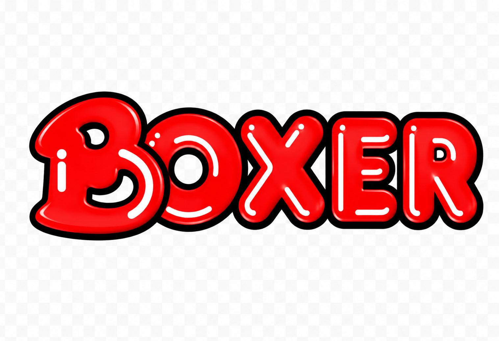
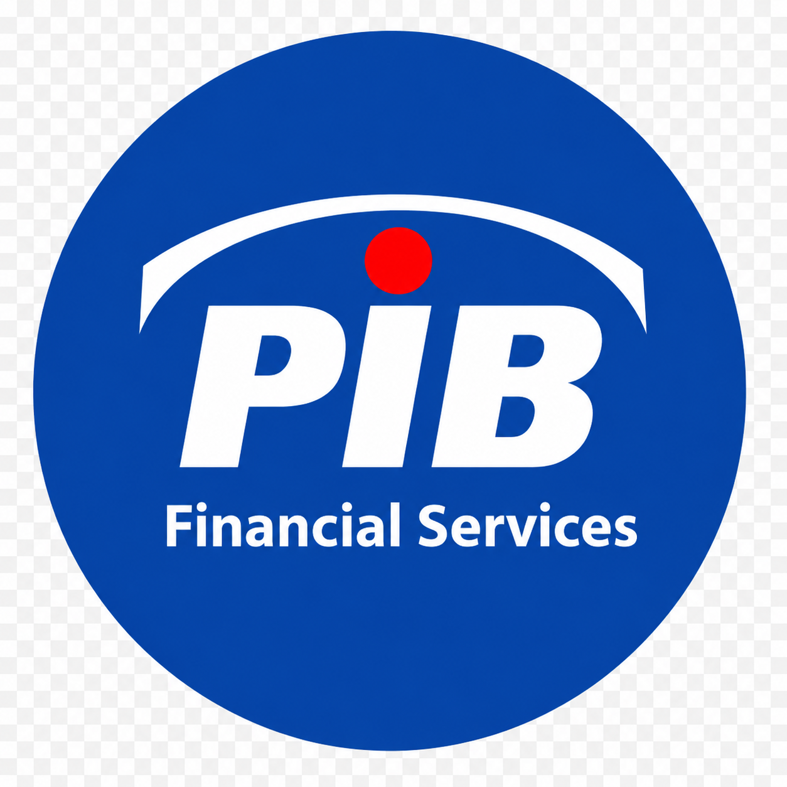
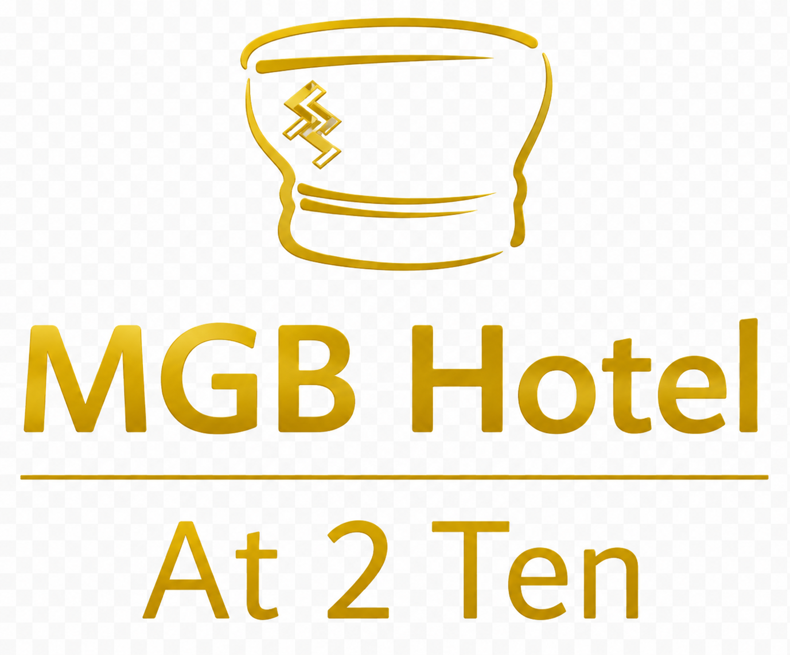
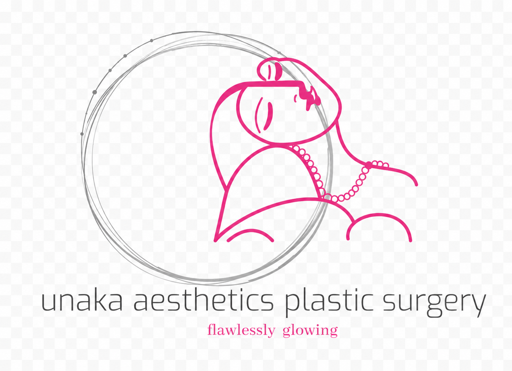
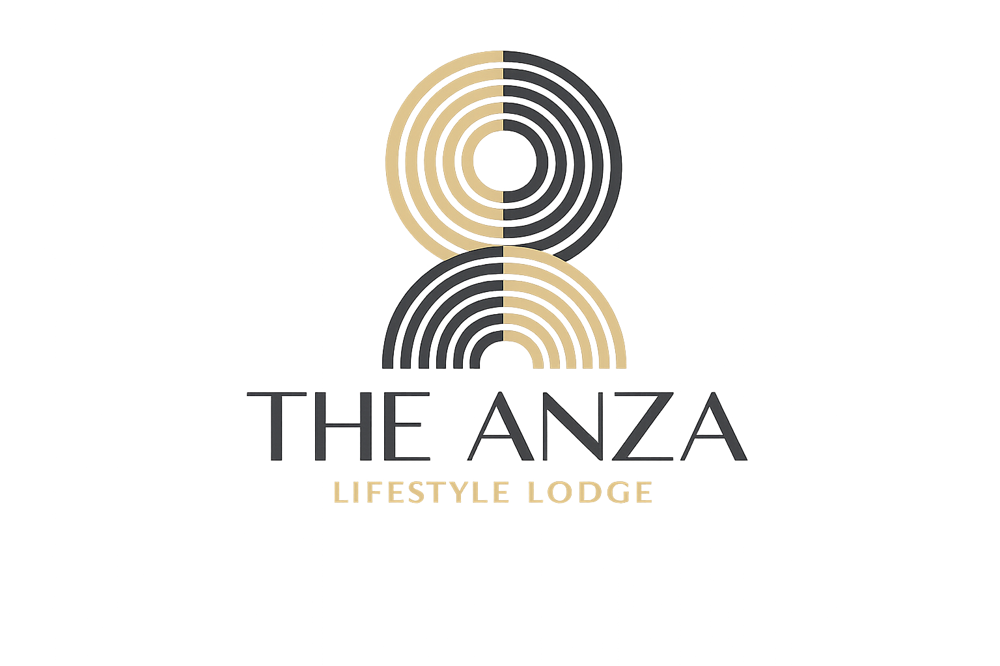

Architecture
Homes and places of work shaped around the site, the brief and the lives unfolding inside them.

ARQ Arquitectura · Johannesburg
ARQ Arquitectura is a Johannesburg-based studio working across residential, commercial and concept design. We believe a building succeeds when it responds honestly to its site, its climate and the people who use it — not when it chases a trend.
Explore the studio room ↗The studio
01 RESIDENTIAL · 02 COMMERCIAL · 03 CONCEPT DESIGN
Architecture rooted in place and purpose. Homes and places of work shaped around the site, the brief and the lives unfolding inside them. Material, light and detail are considered as one continuous experience from room to room.
Homes and places of work shaped around the site, the brief and the lives unfolding inside them.
Material, light and detail considered as one continuous experience from room to room.
Early ideas and spatial studies that give a project direction before it becomes a building.
Clear documentation and steady collaboration to carry the design intent through construction.
A considered journey
From the first conversation to the final handover, the same care runs through every stage of the work.
We learn how you live, work and gather, and what the site makes possible.
We test ideas through plans, models and material studies until the direction feels right.
We turn the chosen concept into coordinated drawings, details and approvals.
We stay alongside the project team as the design becomes a built place.
Selected collaborators








Get in touch
Tell us about your site, your brief and the life you want the space to hold.
studio@arqarquitectura.co.zaJohannesburg, South Africa